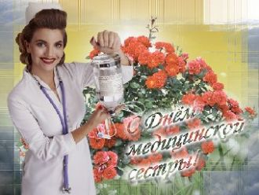
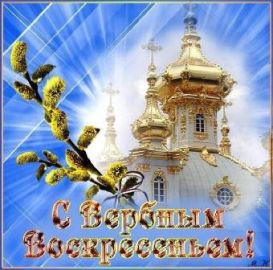
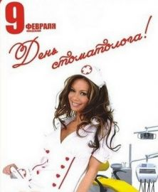
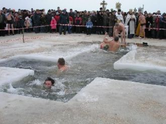

Всі твої бажання здійсняться, знаю я.Силу сподівання маю я. Бажай.Ти своє кохання збережи, пронеси.Кохай.Загадай бажання, не сумуй, чекай.
[Chorus:]Our love is alive and so we begin,Foolishly layin' our hearts on the table,Stumblin' in,Our love is a flame burnin' within,
Опять, опять вошла краса РоссииВ малюсенькую улочку мою.Я в дали вглядываюсь... Что есть силы
Играет пальцами на "клаве",Как виртуозный пианист,Курсор бежит слева направо,Ушел в работу программист.Взгляд неотрывно в мониторе,
Рычат свирепые машины,В непробиваемой броне,Лишь настоящие мужчины,В воде проходят и в огне.На танке грязи и овраги,
Мотивировать себя-Трудная задача.Легче глазки опустить,День мол неудачен.Я звонил, а мне в ответ:"Ничего не нужно!"
Кто гордо зовется фрилансер,И с офисом кто не знаком,В огромной корзине вакансий,Рабочее место их дом.Компьютер источник дохода,

Чудо- ангелы в белых халатах,Наши жизни спасали не раз,И порхая в больничных палатах,Излечили теплом нежных глаз.
Первомай, а ты помнишь как было?Демонстрацией звал нас шагать,Кто застал наш союз нерушимый,Тем сегодня есть что вспоминать.

До окончания православного поста, Еще неделя, наберись терпения, На ветке вербы появление листа, Вещает наступление воскресенья!
Видно, боги уняли свой гнев надо мной,Как еще объяснить нашу встречу с тобой!?Я как-будто вернулся из мира чудес,И сжигает ладони звезда из небес.
Необязательно заваливать цветами,Опустошив при этом банковскую карту,Мужчины, будьте постоянно мужиками,А не один раз в год -восьмое марта.
Прекрасные женщины, милые дамы,
Позвольте сегодня, признаюсь я вам,
Подруги любимые, бабушки, мамы,
В любой ипостаси вам все по зубам.
Привет сынок, служи исправно,
Старайся, честь не запятнай,
Не забывай сынок о главном,
Мы ждем тебя, ты так и знай.

Творцам улыбок наших посвящаем, Сегодня море нежных пожеланий, Мы вам клянемся, честно обещаем, Идти к вам без напоминаний.
01.02.2015г.
23.45ч.
Из солнца - улыбку, из неба - пусть нежность,
Из леса - прохладу, из разлуки - печаль,
Окутан день январской стужей,Морозным воздухом я пьян,И рвётся от любви наружу,Признание для всех Татьян.Создания милые, Танюшки,

У проруби людей столпотворение, Ныряют смело в ледяную с головой, Не страшно окунаться на Крещение, Им сердце согревает дух святой.
Скажи спасибо дню, что он начался,
И солнышку, что не устанет нам сиять,
Спасибо дворнику, который постарался,
С утра пораньше мусор весь убрать.